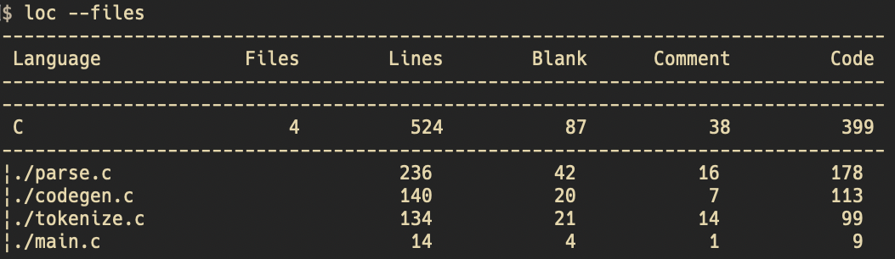
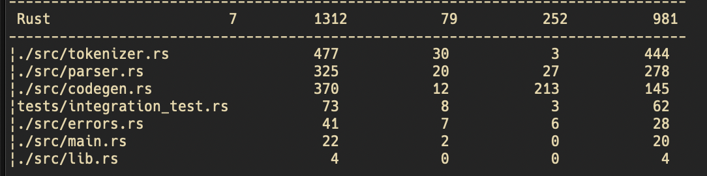
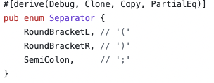
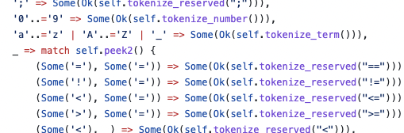

r9cc: Step 10
Twitter: @kaito_tateyama
目次
r9ccの紹介
Step10の実装
今後の実装
r9ccの紹介
https://github.com/dhivelopers/r9cc
- 僕が主に開発し、友人にアドバイスをもらっているプロジェクト
- Rust製Cコンパイラ
- Step11まで実装済み
気が向いた時に実装
r9ccの紹介
chibiccの return 実装時点でのLOCは524

r9ccの紹介
r9ccの return 実装時点でのLOCは1312, (chibicc x2...)

r9ccの紹介
tokenizer: semicolonも一旦ASTに変換 → parserへ

Step10の実装
テストをreturn使うよう変更
Pythonスクリプトで変換(テストケースはfile管理 → test.sh自動生成)
Step10の実装
変数がこれまでに出現しているか？ → HashMap
Step10の実装
tokenizer: 変数判定 → パターンマッチ

今後の実装
フィボナッチくらいはできるようになりたい
(あわよくばセルフホストCコンパイラをコンパイルできる能力まで...)
Thank you!
このスライドはdenoで作った自作slide生成器で、tomlから生成しています